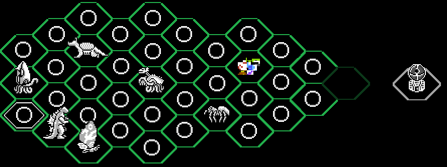
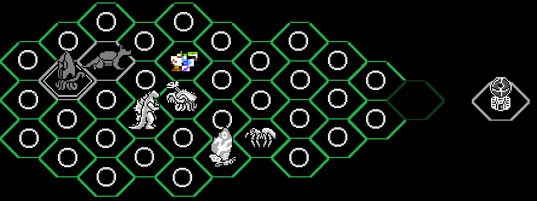

Cosas Descartadas Cosas Descartadas |
 Wrong Way Wrong Way |
 THE BOARD THE BOARD |
|---|
Aquí están un puñado de capturas para una fanpasta que quise hacer antes de wrong way, a mediados de 2019.
O bueno, primero tenemos esta narración en loquendo de ese año llamada "una partida más".
(Si os soy sincero, no recordaba haber escrito esto.)
| La mejor forma de presentar las capturas supongo que sería en orden. El mundo se llamaba "COMIENZO"... Si, lo sé, super original. A parte de GODZILLA y MOTHRA, GEZORA también sería jugable, aunque solo por un rato. |
|  |
|
El tipo de nivel que está por casi todo el tablero se llama "PRIMARIO". Al entrar en uno o te lleva a una pantalla del juego original |
 |
|---|
|
O un nivel completamente vacío. |
 |
| No había mucho enfoque en los niveles, mi prioridad en ese momento eran las peleas de jefes, quería muuuuuuchas peleas. También os habréis dado cuenta de que los sprites de GODZILLA y MOTHRA no son los originales, estas versiones fueron hechas por Zillagamer, junto a los sprites de Gezora que veremos ahora. |
|
Hablando de jefes, aquí está la pelea de GEZORA contra ANGUIRUS. ¡Haz clic para cambiar de imágen! |
| Supongo que GEZORA nunca podría dejar de estar relaccionado a glitches. |
|
Tras eso, ambos se quedan paralizados, terminando así la aparición estelar de GEZORA. |
|  |
|
Ahora toca GODZILLA contra... ¿AQUARIOUS? Es un OC de HardCoreCrocomire y WeegeeDude, lo encontré en su momento mientras buscaba sprites y me gustó. ¡Haz clic para cambiar de imágen! |
|
Y, para terminar con las peleas de Kaijus normales… ¡MOTHRA CONTRA KUMONGA! Recuerdo perfectamente cómo empecé a perder el interés con esta pelea.¡Haz clic para cambiar de imágen! |
|
Pasando a algo más interesante; ¡Aquí está el segundo tipo de nivel! Esto es de lo que más me ha acabado gustando de estas capturas viejas, nada especialmente único, pero me gusta el resultado. Me basé en el nivel bugeado de la Tierra en Replay. El feto volador de la 3ª captura era un minijefe que representaba uno de los “núcleos” del cartucho. Una idea que tuve para la historia era que el/la protagonista fuera avanzando por el juego destruyendo estos “núcleos”, que eran como elementos esenciales para el funcionamiento del cartucho, terminando la historia con el cartucho completamente roto. ¡Haz clic para cambiar de imágen! |
|
Aquí está la última versión del tablero que llegué a hacer, aquí también habría una pelea contra LETHAR y una contra ZILLA y VARAN a la vez (no recuerdo si era 1 vs 2 o 2 vs 2). Ah y si os preguntáis qué es esa base de colores invertidos… Nunca pensé que sería, solo tenía en mente que se volvería accesible al derrotar a todos los jefes. |
 |
|
Nunca llegué a hacer la pelea de VARAN y ZILLA, ¡pero si una de LETHAR! (contra SOLOMON por ninguna razón, seguramente se me hubiera ocurrido algo para hilar todo.) Lo importante aquí es que, aparte de ser estas las primerísimas capturas que llegué a hacer, es que acabé utilizando la idea del final de esta batalla para Wrong Way, simplemente me parecía una buena idea a reutilizar. ¡Haz clic para cambiar de imágen! |
|
Bueno, para acabar, está esta captura que tengo claro el recuerdo que la hice con MS Paint por alguna razón (el resto de estas y de las capturas que he hecho en Wrong Way las he hecho en Paint.net). Fue de las últimas que hice, junto a las del nivel Glitch, no tenía una idea de antemano, solo me puse a editar la captura de pantalla de la pelea contra TITANOSAURUS de la creepy original. No hay contexto que valga aquí, más allá de un godzilla re turbio, luego me vino la idea de una historia en la que el/la jugador/a hiciera a Godzilla más poderoso tras pasar cada mundo, hasta que este atacará al jugador de alguna forma; lo sé, cliché, aunque podría haber funcionado al mezclarlo con la idea de los “núcleos”, dando una sensación de urgencia para destruir el juego antes de que el juego te destruya a tí. ¡Haz clic para cambiar de imágen! |
{kind=link}
{kind=link}